실내건축기사(구) (2009-03-01 기출문제)
1과목: 실내디자인론
1. 디자인 요소 중 선에 대한 설명으로 옳지 않은 것은?
- 사선은 역동적인 이미지를 갖고 있어 동적인 실내 분위기를 연출한다.
- 곡선은 부드럽고 미묘한 이미지를 갖고 있어 실내에 풍부한 분위기를 연출한다.
- 수직선은 구조적 높이감을 주며 엄숙한 분위기를 연출한다.
- 수평선은 심리적으로 상승감, 존엄성 등 주로 정적인 분위기를 연출한다.
(정답률: 78%)

2. 다음 중 실내디자인 과정에서 실시설계 단계의 내용에 속하지 않는 것은?
- 창호도 작성
- 재료 마감표 작성
- 키 플랜(key plan) 작성
- 스터디 모델링(study modeling) 작업 실시
(정답률: 73%)
3. 다음 중 공간의 레이아웃(lay out)과 가장 밀접한 관계를 가지고 있는 것은?
- 재료계획
- 동선계획
- 설비계획
- 색채계획
(정답률: 97%)
4. 다음과 같은 특징을 갖는 창의 종류는?
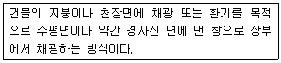
- 측창
- 천창
- 정측창
- 고창
(정답률: 62%)
5. 실내디자인 과정 중 조건 설정 단계에서 고려할 사항이 아닌 것은?
- 의뢰자의 요구사항
- 의뢰자의 공사예산
- 주어진 공간의 합리적 동선
- 설계대상에 대한 계획의 목적
(정답률: 84%)
6. 주거공간을 주행동에 따라 개인공간, 작업공간, 사회적 공간으로 분류할 경우, 다음 중 작업공간에 속하는 것은?
- 다용도실
- 침실
- 서재
- 응접실
(정답률: 76%)
7. 다음의 공간에 대한 설명 중 옳지 않은 것은?
- 모든 사물을 담고 있는 무한한 영역을 의미한다.
- 실내 디자인에 있어서 가장 기본적인 요소이다.
- 실내의 공간은 건축의 구조물에 의해 영역이 한정될 수 있다.
- 사용자의 시각적인 위치에 따라 공간의 형태와 느낌은 변화하지 않는다.
(정답률: 83%)
8. 다음의 전시공간에 관한 설명 중 옳지 않은 것은?
- 전시의 성격은 영리적 전시와 비영리적 전시로 나눌 수 있다.
- 공간의 형태와 규모에 관련한 물리적 요건들이 전시공간 특성을 좌우한다.
- 전체 동선체계는 이용자 동선과 관리자 동선으로 대별되며 서로 통합되도록 계획한다.
- 전시실 순회 유형에 따라 전시실 상호간 결합형식이 결정되며 전체의 전시 계획에 영향을 미친다.
(정답률: 85%)
9. 다음 설명에 알맞은 조명의 설치 형태는?
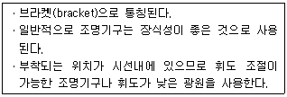
- 매입형
- 벽부형
- 직부형
- 펜던트
(정답률: 71%)
10. 실내공간을 수평방향으로 구획할 때 가장 구획의 효과가 큰 방법은?
- 바닥 마감재료를 달리한다.
- 천장 장식의 변화를 준다.
- 바닥면의 높이 차이를 두어 단으로 처리한다.
- 바닥 색채를 달리한다.
(정답률: 79%)
11. 백화점 실내공간의 색채계획에 대한 설명 중 옳지 않은 것은?
- 색상은 조명효과와 고객의 시각 심리를 함께 고려하여 정한다.
- 다양한 상품색이 혼합되어 있는 곳에서는 중채도의 색을 위주로 한 배색을 한다.
- 구매욕구를 북돋우기 위해 악센트색을 넓은 면적에 적용한다.
- 밝은 색조를 사용하며녀 어두운 색보다 공간의 크기가 확장되어 보인다.
(정답률: 88%)
12. 주택의 거실계획에 대한 설명 중 옳지 않은 것은?
- 거실의 평면은 정사각형보다 하나 변이 너무 짧기 않은 직사각형이 가구배치 등에 효과적이다.
- 거실을 가능한 남향으로 하여 일조와 조망, 통풍이 잘 되도록 한다.
- 실내의 다른 공간과 유기적으로 연결될 수 있도록 통로화 시킨다.
- 거실의 가구배치는 분산배치하는 것이 좋으나, 거실의 규모나 형태, 개구부의 위치나 크기, 거주자의 취향 등에 따라 결정한다.
(정답률: 75%)
13. 다음 중 유닛 가구(unit furniture)에 대한 설명으로 옳지 않은 것은?
- 특정한 사용목적이나 많은 물품을 수납하기 위해 건축화된 가구를 의미한다.
- 가구의 형태를 변화시킬 수 없으며 고정적인 성격을 갖는다.
- 규격화된 단일가구로 다목적으로 사용이 불가능하다.
- 공간의 조건에 맞도록 조합시킬 수 있으므로 공간의 이용효율을 높일 수 있다.
(정답률: 18%)
14. 다음의 원리 중 그 성격이 다른 것은?
- 황금 분할(golden section)
- 모듈러(modulor)
- 카논(canon)
- 점이(gradation)
(정답률: 84%)
15. 질감에 대한 설명 중 옳지 않은 것은?
- 어떤 물체 표면상의 특징을 의미하여 시각으로만 지각할 수 있다.
- 실내 공간에서 재료의 질감 대비를 통하여 변화와 다양성, 드라마틱한 분위기를 연출할 수 있다.
- 효과적인 질감 표현을 위해서는 색채와 조명을 동시에 고려해야 한다.
- 좁은 실내 공간을 넓게 느껴지도록 하기 위해서는 밝은 색을 많이 사용하고, 표면이 곱고 매끄러운 재료를 사용하는 것이 좋다.
(정답률: 91%)
16. 다음 중 죠닝(zoning)계획에서 죤(zone)의 설정 시 고려할 사항과 가장 거리가 먼 것은?
- 사용빈도
- 사용시간
- 사용행위
- 사용재료
(정답률: 97%)
17. 실내공간에서 단면의 비례를 결정하는데 가장 기본이 되는 요소는?
- 인간의 시점과 천장고
- 가구의 높이와 이용도
- 공간의 가로 세로 비율
- 개구부와 가구의 폭
(정답률: 59%)
18. 이질(異質)의 각 구성요소들이 전체로서 동일한 이미지를 갖게 하는 것으로, 변화와 함께 모든 조형에 대한 미의 근원이 되는 원리는?
- 조화
- 강조
- 통일
- 균형
(정답률: 84%)
19. 다음 설명과 관련된 실내디자인의 조건은?
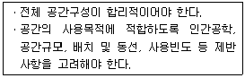
- 예술적 조건
- 심미적 조건
- 경제적 조건
- 기능적 조건
(정답률: 88%)
20. 19세기 말부터 20세기 초에 걸쳐 벨기에와 프랑스를 중심으로 모리스와 미술ㆍ공예운동의 영향을 받아서 과거의 양식과 결별하고 식물이 갖는 단순한 곡선형태를 인테리어 가구 구성에 이용한 예술운동은?
- 아방가르드
- 아르누보
- 아르데코
- 컨템프로리
(정답률: 94%)
2과목: 색채학
21. 청색에 흰색을 혼색시켰을 때의 변화는?
- 청색보다 명도, 채도 모두 높아졌다.
- 청색보다 명도는 높아졌고 채도는 낮아졌다.
- 청색보다 명도는 낮아졌고 채도는 높아졌다.
- 청색보다 명도, 채도 모두 낮아졌다.
(정답률: 91%)
22. 먼셀 색체계에서 명도의 설명으로 틀린 것은?
- 명도가 0에 해당하는 검정은 존재하지 않는다.
- 색의 밝고 어두움을 나타낸다.
- 인간의 눈은 색의 삼속성 중에서 명도에 대한 감각이 가장 둔하다.
- 명도가 10에 해당하는 물체색은 존재하지 않는다.
(정답률: 70%)
23. 색채계획에 있어서 요구되는 디자이너의 자질은?
- 즉흥적이로 연상적인 감각을 가져야 한다.
- 기능성에 주안을 둔 과학적, 이성적 처리 능력이 필요하다.
- 감각적인 것에 치중하여야 한다.
- 심미적인 관점에서 계획해야 한다.
(정답률: 74%)
24. 다음 중 기억색에 대한 설명으로 가장 옳은 것은?
- 대상(물체)의 실제색과 같게 기억한다.
- 대상의 실제색보다 그 색의 주된 특징을 더 강하게 기억한다.
- 대상의 실제색보다 더 채도가 낮은 것으로 기억한다.
- 대상의 실제색보다 색상차를 크게 기억한다.
(정답률: 79%)
25. 색의 중량감과 가장 관계가 깊은 것은?
- 순도
- 채도
- 색상
- 명도
(정답률: 66%)
26. 대비 현상과는 달리 인접된 색과 닮아 보이는 현상은?
- 잔상현상
- 퇴색현상
- 동화현상
- 연상감정
(정답률: 88%)
27. 어떤 두 색이 맞붙어 있을 때 두 색의 인접부분에 강한 대비현상이 일어나는 것은?
- 채도대비
- 반전대비
- 보색대비
- 연변대비
(정답률: 77%)
28. 다음 영ㆍ헬름홀즈의 3원색설에 관한 설명 중 맞는 것은?
- 세가지 시세포가 망막에 분포하여 이 세포에 의하여 여러가지 색지각이 일어난다는 설이다.
- 반대색설이라고도 한다.
- 이화작용과 동화작용에 의해서 색감각이 이루어진다.
- 황색의 물체를 보았을 때 적색과 백색의 시세포가 흥분하여 황색으로 지각한다.
(정답률: 73%)
29. 색채 조화론에 관한 설명 중 틀린 것은?
- 문ㆍ스펜서 조화론에서의 미도(美度)는 배색이 복잡할수록 커진다.
- 문ㆍ스펜서 조화론에서는 먼셀의 색체계와 마찬가지로 명쾌한 기하하적인 관계를 중시하였다.
- 색채 조화론에서는 정량적인 것과 정성적인 것이 있다.
- 오스트발트 조화론은 정량적인 것이다.
(정답률: 57%)
30. 서로 조화되지 않는 두 색을 조화되게 하기 위한 일반적인 방법으로 가장 타당한 것은?
- 두 색의 사이에 백색 또는 검정색을 배치하였다.
- 두 색 중 한 색과 반대되는 색을 두 색의 사이에 배치하였다.
- 두 색 중 한 색과 유사한 색을 두 색의 사이에 배치하였다.
- 두 색의 혼합색을 만들어 두 색의 사이에 배치하였다.
(정답률: 55%)
31. 명시도가 가장 높은 배색은?
- 흰 종이 위의 노란색 글씨
- 빨간색 종이 위의 보라색 글씨
- 노란색 종이 위의 검은색 글씨
- 파란색 종이 위의 초록색 글씨
(정답률: 88%)
32. 혼색원판의 색채 분할 면적의 비율을 변화함으로써 여러 색채를 만들어 이것을 색표로 구현하여 백색량과 흑색량의 기호로 색을 표시한다는 원리는 무슨 표색계인가?
- 오스트발트
- 먼셀
- 그래이브스
- 비렌
(정답률: 58%)
33. 다음 배색 중 그라데이션(Gradation) 효과가 가장 적은 경우는?
- 노랑 - 초록 - 파랑
- 흰색 - 회색 - 검정
- 분홍 - 빨강 - 자주
- 파랑 - 보라 - 노랑
(정답률: 62%)
34. 색채계획을 세움에 있어서 가장 선행되어야 할 사항은?
- 색채심리분석
- 색채전달계획
- 색채환경분석
- 색채적용계획
(정답률: 80%)
35. KS 규격의 작업장 및 공공장소 안전 표지의 디자인 원칙에서 ‘초록색’이 의미하는 것은?
- 화재, 소화
- 혈액, 위험
- 나무, 퇴거
- 안전, 피난
(정답률: 75%)
36. 다음은 디지털 이미지의 특징 중 하나인 해상도(resolution)에 대한 설명이다. 잘못된 것은?
- 동일한 해상도에서 큰 모니터가 더 선명하고, 작은 모니터로 갈수록 선명도가 떨어진다.
- 하나의 이미지 안에 몇 개의 픽셀을 포함하는가에 대한 척도 단위로는 dpi를 사용한다.
- 해상도는 픽셀들의 집합으로 한 시스템 내에서 픽셀의 개수는 정해져 있다.
- 해상도는 디스플레이 모니터 안에 있는 픽셀의 숫자로 가로방향과 세로방향의 픽셀의 개수를 곱하면 된다.
(정답률: 80%)
37. 다음 관용색명에 대한 설명 중 옳은 것은?
- 고동색, 금색, 호박색 등이 관용색명에 해당된다.
- 색의 표시방법이 매우 정량적이고 정확성을 가졌다.
- 색의 3속성에 의한 표시 방법이다.
- KS에서 사용하고 있는 색의 표시 방법이다.
(정답률: 81%)
38. 다음 색 중 헤링의 4원색이 아닌 것은?
- Blue
- Yellow
- Purple
- Green
(정답률: 83%)
39. 다음 중 무채색에 대한 설명으로 맞는 것은?
- 채도는 없고 색상, 명도만 있다.
- 색상는 없고 명도, 채도만 있다.
- 색상, 명도가 없고 채도만 있다.
- 색상, 채도가 없고 명도만 있다.
(정답률: 84%)
40. 색의 연상작용에서 우아, 신비, 불안, 우월감 등을 나타내는 색은?
- Red
- Green
- Yellow
- Purple
(정답률: 75%)
3과목: 인간공학
41. 다음 중 대비(contrast)를 구하는 공식으로 옳은 것은?
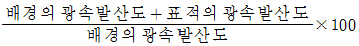
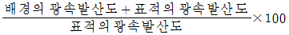
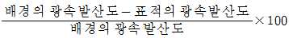
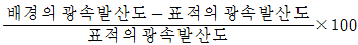
(정답률: 24%)
42. 다음 중 자동화된 인간-기계시스템에서의 인간의 역할로 가장 적절한 것은?
- 감시 및 보전
- 의사결정
- 동력원
- 조종의 실행
(정답률: 44%)
43. 여러 가지의 음이 귀에 들어올 때 한 음에 의하여 다른 음이 틀리지 않는 것을 무엇이라 하는가?
- 가현작용
- 절음현상
- 방음작용
- 은폐현상
(정답률: 55%)
44. 짐을 나르는 방법 중 산소소비량이 가장 크게 소요되는 것은?
- 머리에 이고 옮기는 경우
- 목도를 이용하여 어깨로 옮기는 경우
- 양손으로 들고 옮기는 경우
- 배낭을 이용하여 어깨로 옮기는 경우
(정답률: 82%)
45. 시야의 넓이는 물체의 색깔에 따라 달라지는데 다음 중 시야가 좁아지는 색에서부터 넓어지는 색으로 올바르게 나열한 것은?
- 녹색 ＜ 적색 ＜ 청색 ＜ 황색 ＜ 백색
- 녹색 ＜ 황색 ＜ 청색 ＜ 적색 ＜ 백색
- 백색 ＜ 적색 ＜ 청색 ＜ 황색 ＜ 녹색
- 백색 ＜ 황색 ＜ 청색 ＜ 적색 ＜ 녹색
(정답률: 77%)
46. 다음 중 수공구의 손잡이 설계조건으로 적당하지 않은 것은?
- 손목을 곧게 유지하도록 한다.
- 예리한 모서리나 끝을 제거시킨다.
- 가능하면 접촉면적을 줄이고, 표면은 매끄럽게 한다.
- 빈번한 동작시에는 둘째 손가락보다는 엄지손가락을 사용하도록 한다.
(정답률: 61%)
47. 다음 중 인간이 기계를 능가하는 기능은?
- 반복적인 작업을 신뢰성있게 수행한다.
- 주위의 이상하거나 예기치 못한 사건을 감지한다.
- 주위가 소란하여도 효율적으로 작업한다.
- 입력신호에 대하여 일관성있는 반응을 한다.
(정답률: 80%)
48. 다음 그림에 해당되는 착시(optical illusion) 현상은?
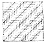
- 방향의 착시
- 분할의 착시
- 동화의 착시
- 윤곽의 착시
(정답률: 81%)
49. 배광(配光)의 분류에 따른 조명방법에서 반간접 조명형에 해당하는 것은?
(정답률: 86%)
50. 다음 중 망막의 두 가지 광수용기에 대한 설명으로 틀린 것은?
- 간상체는 주로 밤에 기능을 한다.
- 원추체는 황반(favea)에 집중되어 있다.
- 간상체는 명암(흑백)을 인식한다.
- 원추체에 이상이 생길 경우에는 야맹증에 걸리게 된다.
(정답률: 70%)
51. 다음 중 시각표시장치보다 청각표시장치를 쓰는 것이 유리한 경우는?
- 메시지가 복잡한 경우
- 메시지가 후에 다시 참조되는 경우
- 메시지가 즉각적인 행동을 요구하는 경우
- 메시지가 공간적인 위치를 이루는 경우
(정답률: 71%)
52. 감각기관이 감수하는 최대 정보의 양이 초당 10억 bit일 경우, 신경접속 이후 의식에서 처리되는 정보의 양은 몇 bit/s 정도인가?
- 0.16
- 16
- 160
- 16000
(정답률: 38%)
53. 다음 중 눈의 홍채는 카메라의 무엇과 동일한 역할을 하는가?
- 셔터
- 조리개
- 렌즈
- 필름
(정답률: 74%)
54. 일반적으로 시각적 표시장치에서 지침(指針)의 설계요령으로 잘못된 것은?
- 선각이 약 20° 정도 되는 뾰족한 지침을 사용한다.
- 지침의 끝은 작은 눈금과 맞닿게 겹치지 않게 한다.
- 원형 눈금이 경우 지침의 색은 선단에서 눈금의 중심까지 칠한다.
- 오차를 없애기 위해 지침을 눈금면과 분리시킨다.
(정답률: 50%)
55. 다음 중 인체 측정자료를 이용하여 설계할 때 응용원칙과 적용의 연결이 적절하지 않은 것은?
- 최대치 - 문의 높이
- 조절식 - 의자의 높이
- 최소치 - 그네의 줄 강도
- 최소치 - 버스의 손잡이 높이
(정답률: 80%)
56. 다음 중 폰(phon)에 관한 설명으로 옳은 것은?
- 1000Hz, 1dB인 음은 10phon이다.
- 특정 음과 같은 크기로 들리는 1000Hz 순음의 음압 수준값이다.
- 1000Hz, 60dB 인 음은 1000Hz, 40dB 인 음보다 100배 큰 음이다.
- phon값은 주파수 보정효과는 없으나 상대적인 크기를 나타낸다.
(정답률: 57%)
57. 서서하는 작업을 위한 작업대의 높이를 설계할 때 참고하여야 할 인체측정치는?
- 눈 높이
- 어깨 높이
- 오금 높이
- 팔꿈치 높이
(정답률: 64%)
58. 인체의 감각기관을 통해 현존하는 환경의 자극에 대한 정보를 받아들이게 되는 과정을 무엇이라 하는가?
- 지각
- 반응
- 인지
- 선호도
(정답률: 74%)
59. 다음 중 인체 골격의 주요 기능이 아닌 것은?
- 조혈 작용
- 체내의 장기보호
- 신체의 지지 및 형상 유지
- 수축과 이완을 통한 관절의 움직임
(정답률: 62%)
60. 부품의 일반적인 위치를 정할 때 적용하는 부품 배치의 원칙으로만 나열된 것은?
- 중요성의 원칙, 사용빈도의 원칙
- 중요성의 원칙, 사용순서의 원칙
- 기능별 배치의 원칙, 사용빈도의 원칙
- 기능별 배치의 원칙, 사용순서의 원칙
(정답률: 58%)
4과목: 건축재료
61. 다음의 합성수지에 관한 설명 중 옳지 않은 것은?
- 폴리우레탄수지는 도막 방수재 및 실링재로서 이용된다.
- 폴리스티렌수지는 발포제로서 보드상으로 성형하여 단열재로 사용된다.
- 실리콘수지는 내열성ㆍ내한성이 우수한 수지로 접착제, 도료로 사용된다.
- 염화비닐수지는 내산ㆍ내알칼리성이 작지만 내후성이 커서 건축재료로 널리 사용된다.
(정답률: 58%)
62. 일반적으로 석질이 양호한 암석을 파쇄하여 얻은 쇄석을 콘크리트에 사용할 때 나타나는 결점은?
- 압축강도 저하
- 부착강도 저하
- 단위수량 증가
- 동결융해 저항성 저하
(정답률: 42%)
63. 다음 중 강화판 유리에 대한 기술로 옳지 않은 것은?
- 600℃ 이상 가열한 후 공기를 분사하여 급랭시킨 것이다.
- 강도는 보통유리의 5배 정도이다.
- 열처리 후 가공절단이 가능하다.
- 파괴시 열처리에 의한 변형 때문에 작은 파편이 되어 분쇄된다.
(정답률: 70%)
64. 다음 중 수성페인트에 합성수지와 유화제를 섞은 페인트는?
- 에멀션 페인트
- 조합 페인트
- 견련 페인트
- 방청 페인트
(정답률: 50%)
65. 플라스틱(plastic)의 일반적인 성질로서 옳지 않은 것은?
- 비중이 0.9 ~ 2.0 정도이다.
- 단위체적 중량은 일반적으로 알루미늄보다 가볍다.
- 내마모성 및 표면강도가 우수하다.
- 탄성계수가 작고 변형이 크다.
(정답률: 45%)
66. 금속제춤에 대한 설명 중 옳지 않은 것은?
- 메탈 라스(Metal lath)는 연강판에 일정한 간격으로 그물눈을 내고 늘여 만든 것이다.
- 조이너(Joinner)는 계단의 디디팜 끝에 대어 오르내릴 때 미끌어지지 않도록 하는 철물로서 미끄럼 막이라고도 한다.
- 코너 비드(Corner Bead)는 벽, 기둥 등의 모서리 부분에 미장 바름을 보호하기 위하여 사용된다.
- 메탈 폼(Metal Form)은 금속재의 콘크리트용 거푸집으로서 치장콘크리트에 사용된다.
(정답률: 63%)
67. 다음 미장재료 중 건조시 무수축성의 성질을 가진 재료는?
- 시멘트 모르타르
- 돌로마이트 플라스터
- 회반죽
- 석고 플라스터
(정답률: 44%)
68. 다음 중 강(鋼)의 일반적 성질에 대한 설명으로 옳지 않은 것은?
- 탄소 함유량이 증가함에 따라 열전도율을 떨어진다.
- 탄소 함유량이 증가함에 따라 비열은 커진다.
- 융점은 대략 1425~1528℃이다.
- 항복비란 상위 항복점과 하위항복점의 비를 말한다.
(정답률: 34%)
69. 굳지 않은 콘크리트에 염화칼슘을 사용했을 때 나타나는 효과 중 옳지 않은 것은?
- 경화속도가 빨라진다.
- 콘크리트의 내구성이 좋아진다.
- 방동효과가 생긴다.
- 콘크리트의 초기강도가 높아진다.
(정답률: 46%)
70. 다음 중 테라조의 종석으로 가장 많이 사용되는 것은?
- 안산암
- 응회암
- 대리석
- 이판암
(정답률: 50%)
71. 금속재료의 특성에 대한 설명으로 옳지 않은 것은?
- 주철 : 탄소량은 2.5~4.5% 정도이고 주조성이 매우 양호한 편이다.
- 납 : 비중이 11.4로 아주 크고 연질이며 전연성이 풍부하다.
- 동 : 전기전도율과 열전도율이 매우 높으며 산이나 암모니아에 부식되지 않는다.
- 알루미늄 : 콘크리트에 접하거나 흙 중에 매몰된 경우에는 부식되기 쉽다.
(정답률: 75%)
72. 다음 중 목재에 관한 기술로로 옳지 않은 것은?
- 가력방향이 섬유에 평행할 경우 압축강도가 인장강도보다 크다.
- 함수율이 섬유포화점 이상에서는 함수율이 변해도 강도의 변화는 거의 없다.
- 타 재료에 비해 목재는 비강도가 큰 편이다.
- 목재의 열의 전도가 더딘 것은 조직 가운데 공간이 있기 때문이다.
(정답률: 31%)
73. 소석회에 모래ㆍ해초풀ㆍ여물 등을 혼합하여 바르는 미장 공법은?
- 리신바름
- 회반죽바름
- 회사벽바름
- 돌로마이트 플라스터 바름
(정답률: 60%)
74. 알칼리 황화물과 폴리할로겐 탄화수소의 반응으로 얻어지는 고무상의 고분자물질로 줄눈재 또는 구멍 메움재로 사용되는 접착제는?
- 네오프렌
- 치오콜
- 카세인
- 알부민
(정답률: 65%)
75. 목재의 가공품 중 펄프를 접착제로 제판하여 양면을 열압건조시킨 것으로 비중이 0.8 이상이며 수장판으로 사용하는 것은?
- 연질섬유판
- 파키트보드
- 반경질섬유판
- 경질섬유판
(정답률: 47%)
76. 다음 중 바닥용으로 사용되는 모자이크 타일의 재질로서 가장 적당한 것은?
- 도기질
- 자기질
- 석기질
- 토기질
(정답률: 64%)
77. 건축물에서 테라코타는 주로 어느 목적으로 사용되는가?
- 보온
- 방수
- 구조재의 보강
- 건축물 장식
(정답률: 67%)
78. 재료에 외력을 가할 때 작은 변형만 나타나도 파괴되는 성질은?
- 연성
- 취성
- 인성
- 탄성
(정답률: 80%)
79. 콘크리트 배합 설계에서 물의 양은 150ℓ/m3, 시멘트의 양은 100ℓ/m3로 하였을 경우 물-시멘트비는? (단, 시멘트의 비중은 3.14임)
- 34%
- 48%
- 67%
- 150%
(정답률: 46%)
80. 공시체(천연산 석재)를 (1⑤±2)℃로 24시간 건조한 상태의 질량이 100g, 표면건조포화상태의 질량이 110g, 물속에서 구한 질량이 60g일 때 이 공시체의 표면건조포화상태의 비중은?
- 2.2
- 2
- 1.8
- 1.7
(정답률: 21%)
5과목: 건축일반
81. 조적조 벽체상부에 테두리보를 설치하는 가장 중요한 이유는?
- 벽의 개구부 설치를 쉽게 하기 위해서
- 벽의 미장마감이 용이하기 때문에
- 내력벽을 일체로 하여 건물을 안정시키기 위해서
- 철근배근을 적게 하기 위해서
(정답률: 62%)
82. 창의 장식과 관련한 트레이서리(tracery)가 발생한 건축양식은?
- 바로크양식
- 로마네스크양식
- 고딕양식
- 르네상스양식
(정답률: 32%)
83. 철근콘크리트 구조에서 철근과 콘크리트의 합성효과가 성립되는 이유로 옳지 않은 것은?
- 철근과 콘크리트의 온도에 의한 선팽창계수의 차가 적다.
- 콘크리트에 매립되어 있는 철근은 잘 녹슬지 않는다.
- 철근과 콘크리트의 부착강도가 비교적 크다.
- 콘크리트의 인장강도가 커질수록 철근의 좌굴이 방지된다.
(정답률: 43%)
84. 특별피난계단의 구조에 관한 설명 중 옳지 않은 것은?
- 계단실 및 부속실의 실내에 접하는 부분의 마감은 불연재료로 할 것
- 계단실에는 노대 또는 부속실에 접하는 부분 외에는 건축물의 내부와 접하는 창문 등을 설치하지 아니할 것
- 건축물의 내부에서 부속실로 통하는 출입구에는 을종방화문을 설치할 것
- 출입구의 유효너비는 0.9m 이상으로 할 것
(정답률: 59%)
85. 다음 중 방화구조에 속하지 않는 것은?
- 철망 모르타르로서 그 바름두께가 2cm인 것
- 시멘트 모르타르 위에 타일을 붙인 것으로서 그 두께의 합계가 2.5cm인 것
- 심벽에 흙으로 맞벽치기 한 것
- 두께 2cm의 암면보온판
(정답률: 43%)
86. 건축법상 승용승강기를 설치하여야 하는 대상건축물의 선정 기준은?
- 건축물의 용도와 거실바닥면적
- 층수와 연면적
- 층수와 거실바닥면적의 합계
- 건축물의 용도와 연면적
(정답률: 45%)
87. 철근콘크리트구조의 보철근 배근에서 주근의 이음위치로 가장 적당한 것은?
- 보의 지점으로부터 스팬(span)의 1/2되는 곳
- 압축력이 가장 적은 곳
- 인장력이 가장 적은 곳
- 보의 지점으로부터 스팬(span)의 1/4되는 곳
(정답률: 56%)
88. 철골조의 접합에서 회전자유의 절점을 가지는 접합은?
- 단접합
- 아크용접접합
- 핀접합
- 납접합
(정답률: 67%)
89. 다음 중 다포계 양식의 특징이 아닌 것은?
- 창방 위에 평방을 놓아 구조적인 안정을 취한다.
- 외부출목은 2출목 이하이고 대부분 연등천장이다.
- 기둥과 기둥 사이에도 공포를 배치한다.
- 조선시대 궁궐이나 사찰의 전각에서 많이 사용되었다.
(정답률: 40%)
90. 방화구획 설치기준에 관한 규정 중 옳지 않은 것은?
- 11층 이상의 층은 바닥면적 200m2 이내마다 구획하여야 한다.
- 11층 이상의 층은 스프링클러 시설을 설치하는 경우에는 바닥면적 600m2 이내마다 구획하여야 한다.
- 10층 이하의 층은 바닥면적 1000m2 이내마다 구획하여야 한다.
- 지상층은 3층 이상의 층부터, 지하층은 지하 3층 이하부터 층마다 구획하여야 한다.
(정답률: 39%)
91. 다음 중 조적조에서의 개구부에 대한 설명으로 옳지 않은 것은?
- 대린벽으로 구획된 각벽에서 개구부 폭의 합계는 그 벽 길이의 1/2 이하로 하여야 한다.
- 하나의 개구부와 그 바로 윗층에 있는 개구부와의 수직거리는 90cm 이상이어야 한다.
- 개구부 상호간 또는 개구부와 대린벽 중심과의 수평거리는 그 벽두께의 2배 이상으로 하여야 한다.
- 폭이 1.8cm를 넘는 개구부의 상부에는 철근콘크리트구조의 윗안방을 설치하여야 한다.
(정답률: 38%)
92. 외관이 좋아 강도를 필요로 하지 않는 벽체에 많이 쓰이는 벽돌쌓기 방법은?
- 영식쌓기
- 화란식쌓기
- 불식쌓기
- 미식쌓기
(정답률: 25%)
93. 건축물의 3층 이상의 층으로서 문화 및 집회시설의 공연장이나 위락시설 중 주점영업의 용도에 쓰이는 층으로 그 층 거실의 바닥면적의 합계가 몇 m2 이상일 때 옥외피난계단을 설치하여야 하는가?
- 200m2 이상
- 300m2 이상
- 400m2 이상
- 500m2 이상
(정답률: 48%)
94. 철골구조에서 사용되는 접합재 보강재에 대한 설명 중 옳지 않은 것은?
- 접합판(gusset plate) - 플랜지에 덧대어 강성을 보강하는 판
- 덧판(splice plate) - 이음위치에 덧대어 접합하는 강판
- 끼움판(filler plate) - 빈틈을 채우는 강판
- 대판(tie plate) - 평행된 두 재를 연결하는 강판
(정답률: 38%)
95. 평지로 된 대지에 상점의 용도로 사용되는 지상 6층인 건축물의 피난층에 설치하는 바깥쪽으로의 출구 유효너비의 합계는 최소 얼마 이상으로 하여야 하는가? (단, 각 층의 바닥면적은 1층과 2층은 각각 1000m2이고, 3층부터 6층까지는 각각 1500m2 이다.)
- 6m
- 9m
- 12m
- 36m
(정답률: 46%)
96. 다음 중 중세시대 비잔틴 건축의 특징과 가장 거리가 먼 것은?
- 아케이드(arcade)
- 부주두(dosseret)
- 펜덴티브 돔(pendentive dome)
- 플라잉 버트레스(flying buttress)
(정답률: 61%)
97. 르 꼬르뷔제(Le Corbusier)의 근대건축 5원칙과 거리가 먼 것은?
- 필로티
- 옥상정원
- 철과 유리의 사용
- 수평띠창
(정답률: 71%)
98. 관계전문기술자(건축구조기술사)의 협력을 받아 구조안전을 확인하지 않아도 되는 건축물은?
- 기둥과 기둥 사이의 거리가 20미터인 건축물
- 지상층수가 20층인 건축물
- 다중이용 건축물
- 차양 등이 외벽의 중심선으로부터 3미터 이상 돌출된 건축물 (단, 한쪽단 고정, 타단 자유)
(정답률: 18%)
99. 철근콘크리트구조에서 1방향 슬래브의 두께는 최소 얼마 이상으로 하여야 하는가?
- 50mm
- 100mm
- 150mm
- 200mm
(정답률: 50%)
100. 다음 중 각 소방시설의 종류별 연결이 옳지 않은 것은?
- 소화설비 - 옥내소화전설비
- 피난설비 - 자동화재 속보설비
- 소화용수설비 - 소화수조
- 소화활동설비 - 제연설비
(정답률: 34%)
6과목: 건축환경
101. 겨울철 건물에서의 열 손실 원인이 아닌 것은?
- 벽체의 구조
- 자연환기
- 인체의 발열
- 극간풍
(정답률: 79%)
102. 조도에 관한 설명으로 옳은 것은?
- 빛에너지가 단위 입체각을 통과하는 비율이다.
- 조도의 단위는 루멘(lm)이다.
- 면의 단위면적에서 발산하는 광속의 양을 말한다.
- 수조면의 단위면적에 입사하는 광속의 양을 말한다.
(정답률: 49%)
103. 실내음향설계에서 최적잔향시간의 확보에 대한 충분한 검토가 요구되는 실의 종류에 속하지 않는 것은?
- 콘서트홀
- 회의실
- 극장
- 오페라하우스
(정답률: 64%)
104. 다음과 같은 조건에서 두께 20cm인 콘크리트벽체를 통과한 손실열량은?
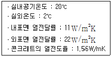
- 약 45W/m2
- 약 58W/m2
- 약 68W/m2
- 약 75W/m2
(정답률: 31%)
1⑤. 다음 중 실내에서 눈부심(glare)을 방지하기 위한 방법이 아닌 것은?
- 플라스틱 커버가 되어 있는 조명기구를 선정한다.
- 시선으르 중심으로 30° 범위 내의 글레어 존에 광원을 설치한다.
- 고휘도의 물체가 시야 속에 들어오지 않게 한다.
- 휘도가 낮은 광원을 사용한다.
(정답률: 71%)
106. 다음의 물리적 온열요소에 대한 설명 중 옳지 않은 것은?
- 기온은 일반적으로 공기의 건구온도를 말한다.
- 평균복사온도는 일반적으로 주변공간 표면온도의 면적 가중 평균값을 이용한다.
- 기류는 대류에 의한 인체의 열손실 및 열획득을 증가시킨다.
- 습도는 고온보다는 중간온도 범위에서 인체의 열평형에 크게 작용한다.
(정답률: 20%)
107. 다음 설명이 나타내는 것은?
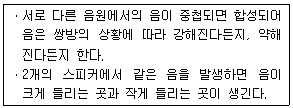
- 음의 굴절
- 음의 반사
- 음의 간섭
- 음의 회절
(정답률: 62%)
108. 흡음재료에 관한 설명 중 옳지 않은 것은?
- 다공성 흡음재는 재료의 두께를 증가시키면 저주파수의 흡음률이 증가된다.
- 판진동 흡음재는 얇을수록 흡음률이 커진다.
- 단일공동 공명기는 공명에 의하여 특정 주파수의 음만을 효과적으로 흡음한다.
- 천공판 공명기에 다공재를 넣으면 고주파수의 흡음률이 감소된다.
(정답률: 52%)
109. 배수관에 설치되느느 트랩 내의 봉수 깊이로서 가장 적절한 것은?
- 50mm 이하
- 50 ~ 100mm
- 150 ~ 200mm
- 200mm 이상
(정답률: 48%)
110. 거실의 용도에 다른 조도기준이 높은 것에서 낮은 것으로 옳게 배열된 것은? (단, 바닥에서 85cm 높이에 있는 수평면의 조도)
- 독서 ＞ 관람 ＞ 설계 ＞ 일반사무
- 독서 ＞ 설계 ＞ 관람 ＞ 일반사무
- 설계 ＞ 일반사무 ＞ 독서 ＞ 관람
- 설계 ＞ 독서 ＞ 관람 ＞ 일반사무
(정답률: 71%)
111. 자연환기에 대한 설명으로 옳은 것은?
- 많은 환기량을 요하는 실에는 기계환기를 사용하지 않고 자연환기를 사용하여야 한다.
- 중력환기는 실내외의 온도차에 의한 공기의 밀도차가 원동력이 된다.
- 중력환기량은 개구부 면적이 크면 클수록 감소한다.
- 풍력환기량은 벽면으로 불어오는 바람의 속도에 반비례한다.
(정답률: 83%)
112. 벽체의 표면결로 방지대책으로 옳지 않은 것은?
- 환기에 의해 실내 절대습도를 저하한다.
- 실내에서 발생하는 수증기를 억제한다.
- 단열강화에 의해 실내측 표면온도를 상승시킨다.
- 벽체의 실내측 표면을 열전도성이 좋은 재료로 방습층을 시공한다.
(정답률: 41%)
113. 다음의 잔향시간에 대한 설명 중 ( )안에 알맞은 내용은?
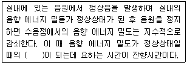
- 1/102
- 1/104
- 1/106
- 1/108
(정답률: 59%)
114. 공기조화방식 중 2중덕트 변풍량방식에 대한 설명으로 옳지 않은 것은?
- 정풍량 2중덕트방식보다는 에너지 절감효과가 있다.
- 최소풍량이 취출되어도 실내온도는 설정 온도범위를 유지한다.
- 변풍량 유닛의 설치공간이 필요하다.
- 외기 풍량을 많이 필요로 하는 실에는 적용할 수 없다.
(정답률: 55%)
115. 다음 중 일반적인 건축물의 실내 공기환경 오염의 척도로 가장 많이 사용되는 것은?
- CO2
- CO
- SO2
- 부유분진
(정답률: 62%)
116. 다음의 급수방식 중 수질오염의 가능성이 가장 큰 것은?
- 수도직결방식
- 고가탱크방식
- 압력탱크방식
- 탱크가 없는 부스터방식
(정답률: 63%)
117. 다음 중 신축 공동주택의 실내공기질 측정 항목에 속하지 않는 것은? (단, 100세대 이상인 경우)
- 벤젠
- 라돈
- 톨루엔
- 에틸벤젠
(정답률: 48%)
118. 다음 중 건물의 에너지절약 방법과 가장 거리가 먼 것은?
- 열전도율이 높은 재료를 사용한다.
- 창호는 기밀하게 한다.
- 열효율이 좋은 기기를 사용한다.
- 태양에너지를 이용하는 설계를 한다.
(정답률: 79%)
119. 건축적 채광의 방법 중 측광(lateral lighting)에 대한 설명으로 옳은 것은?
- 편측채광의 경우 조도분포가 불균일하다.
- 구조 시공이 어려우며 비막이에 불리하다.
- 근린의 상황에 따라 채광을 방해하는 경우가 없다.
- 통풍 차열에 불리하다.
(정답률: 59%)
120. 소음의 분류 중 음압 레벨의 변동폭이 좁고, 측정자가 귀로 들었을 때 음의 크기가 변동하고 있다고는 생각되지 않는 종류의 음은?
- 변동소음
- 간헐소음
- 충격소음
- 정상소음
(정답률: 64%)